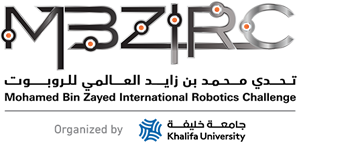
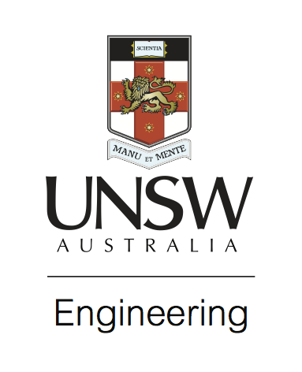
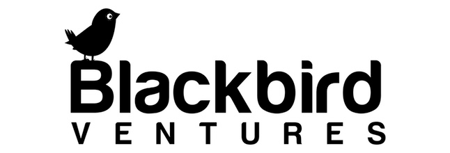
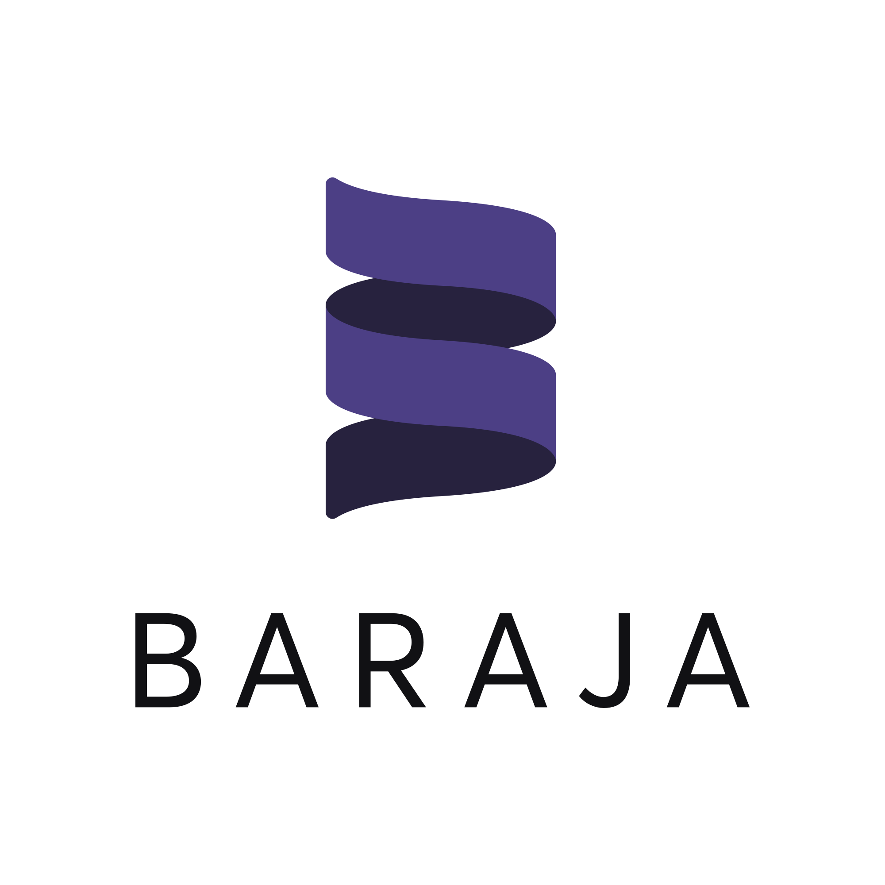
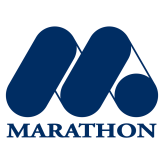
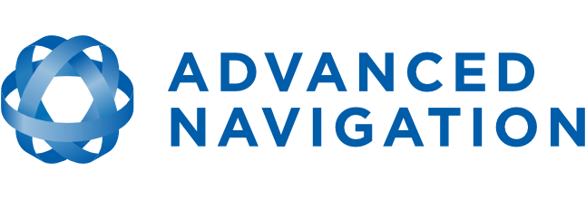
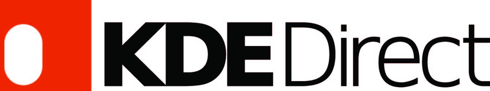
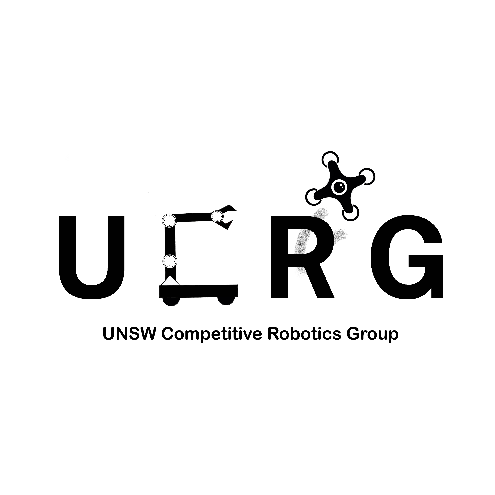

 MBZIRC, Platinum Sponsor
 UNSW Faculty of Engineering, Platinum Sponsor
 Blackbird Ventures, Gold Sponsor
 Baraja, Gold Sponsor
New South Wales Trade & Investment, Gold Sponsor
 Marathon Targets, Gold Sponsor
 Advanced Navigation, Gold Sponsor
 KDE Motors, Bronze Sponsor
 UCRG
UNSW Engineering Groups - UCRG FIRST CREATE BLUEsat Sunswift Redback